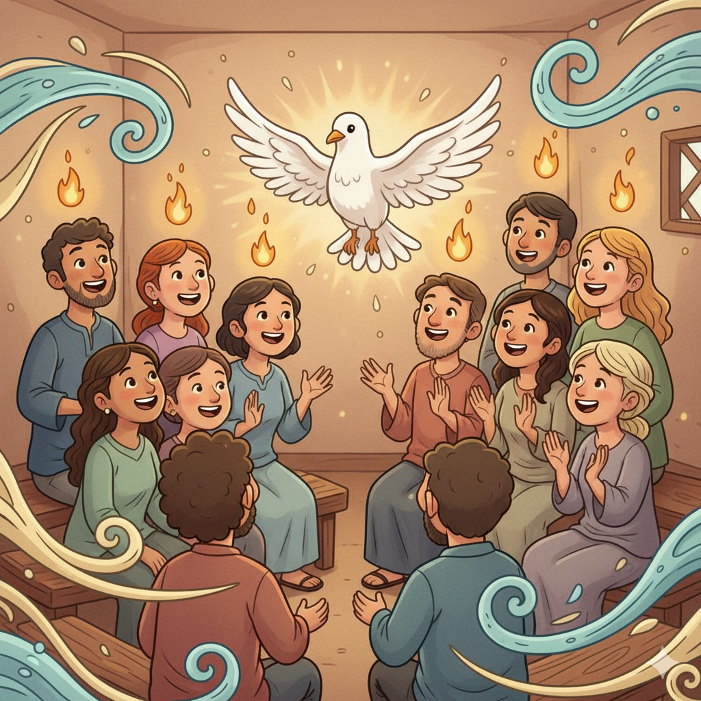
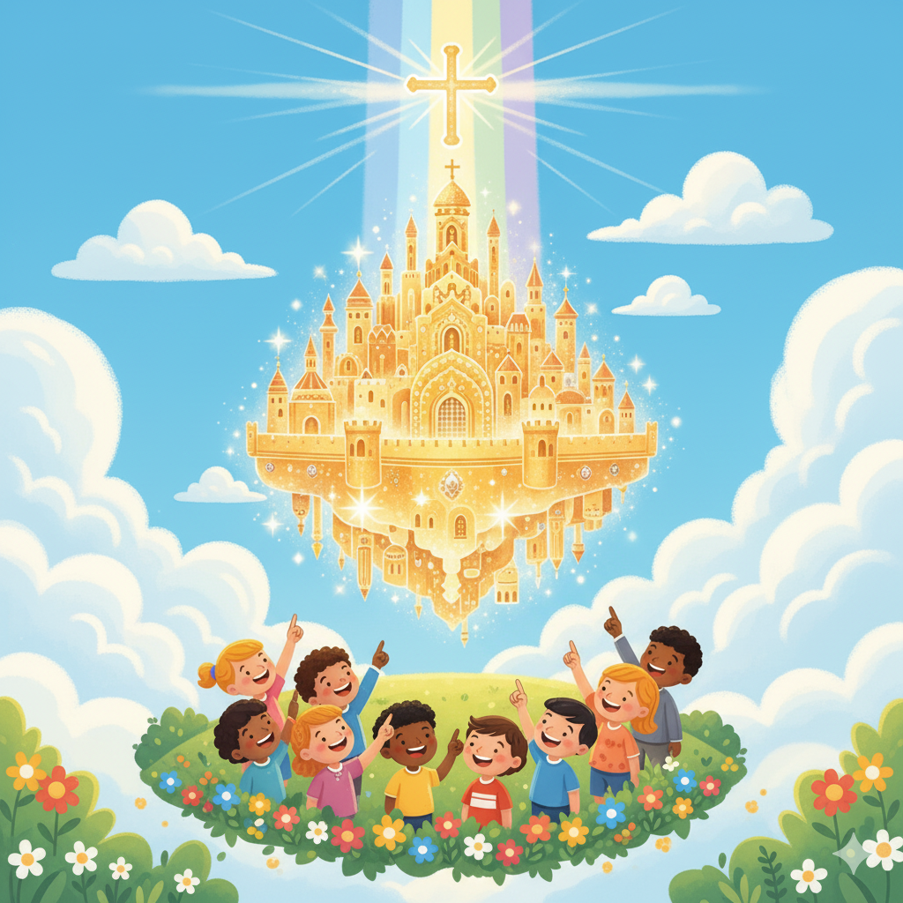

Creation
Light breaking into darkness, a smiling globe forming...
The Fall of Man

A playful garden with flowers and animals...
Noah's Flood

A big cartoon ark floating on cheerful waves...
Abraham's Covenant

A cozy desert night scene with a little tent...
Moses & The Exodus

A glowing burning bush beside Moses...
David & Solomon's Kingdom

A joyful cartoon castle with golden walls...
Prophets Foretelling the Messiah

Cute prophets holding scrolls...
Birth of Jesus

A cozy Bethlehem stable under a glowing star...
Ministry of Jesus

A bright green field with Jesus smiling warmly...
Crucifixion & Resurrection
A gentle cross silhouette on a hill...
Pentecost
Disciples gathered indoors...
Spread of the Church

Cartoon ships with open sails carrying scrolls...
Revelation
A dazzling golden city shining with light...